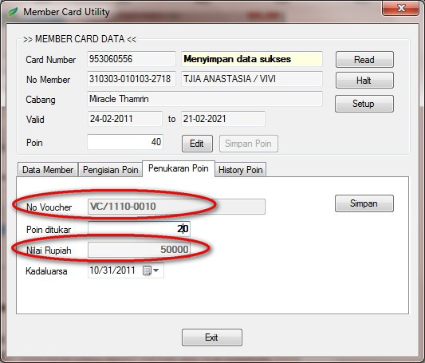
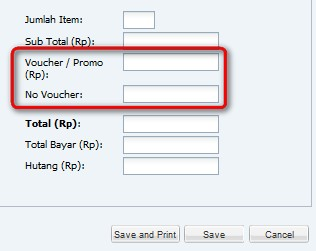
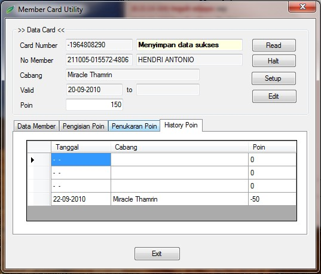
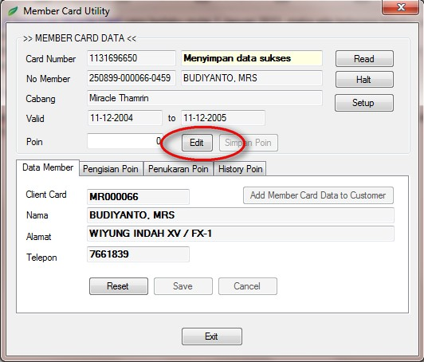

Ubah Status Tindakan Non Medis
(note: jika setelah di-Refresh Customer masih belum muncul di Daftar Tindakan Non Medis, maka segera laporkan ke CRO, karena kemungkinan Status Appointment belum diubah menjadi "datang")



(note: untuk melihat apakah Customer memiliki Paket, dapat dilihat pada menu Kasir --> Pengambilan Paket. Cara penggunaan Pengambilan Paket dapat dilihat di bagian lain User Manual ini, atau klik disini)

(note: Untuk memudah CRO mengatur jadwal Therapist, ubah Status menjadi selesai sesaat sebelum tindakan selesai)
Copyright © 2010, IT Department of Miracle Aesthetic Clinic Group
Created with the Freeware Edition of HelpNDoc: Easy to use tool to create HTML Help files and Help web sites